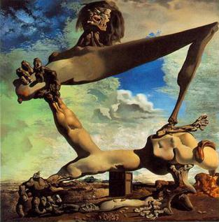
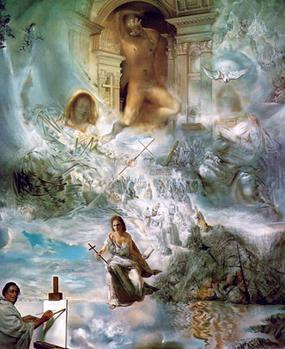
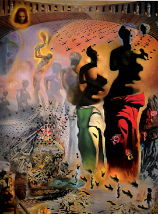
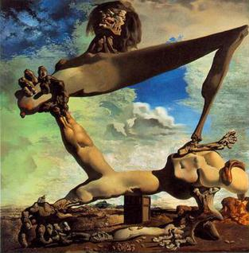
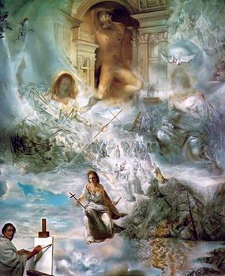
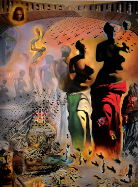

Welcome to the weird, wonderful
world of Salvador Dalí !

Here at "The Art of Salvador Dali" we are dedicated to preserving and displaying the artworks and history of one of the most memorable and challenging artists of the 20th century. Here on this page, you will find a comprehensive digital collection of Dali's greatest artworks, and detailed descriptions of the history of each piece. Our site is interactive, allowing for dynamic exploration and discovery of said works!
While our main focuses are preservation and exhibition, we are also heavily dedicated to education about Dali's life and history! As part of our interactive experience, we also have a queries and FAQs section devoted to receiving questions and comments from YOU about Dali, his work, his history, or the site.
Our ultimate goal is for you to explore and get lost in the Dali's bizarre and wondrous world of surrealism, so please feel free to browse our links or select an artwork from the carousel at the bottom of this page! Happy exploring!


 




